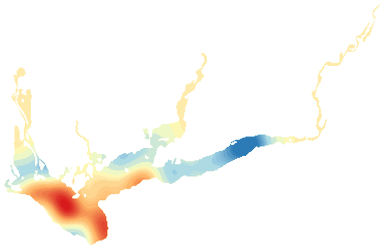

LakeScope › GA
Lake Seminole today
Updated 2026-11-14 - Atlas Labs
Some algae possible, 70°F water, level falling, near normal, calm this morning.
Water level
76.64 ft
USGS gauge 02357500 - 2026-11-14
7-day trend: falling (-0.20 ft). Compared with normal for this date: -0.2 ft (same weeks, 2016-2025).
Water clarity and algae
Some algae possible Last clear view: about a week ago. 1 cloudy pass since.
Surface temperature
70°F
seen from space on 2026-11-10

Weather, next 3 days
| Day | Sky | High / low | Wind | Rain |
|---|---|---|---|---|
| Saturday | Sunny | 60 / 35°F | 10 mph N | 0% |
| Sunday | Areas Of Frost then Sunny | 62 / 45°F | 5 mph NE | 0% |
| Monday | Mostly Cloudy | 58 / 48°F | 15 mph NE | 1% |
Sunrise 07:05 - sunset 17:42 - Waxing crescent. National Weather Service.
Get the LakeScope app: alerts and the 3-D view of Lake Seminole